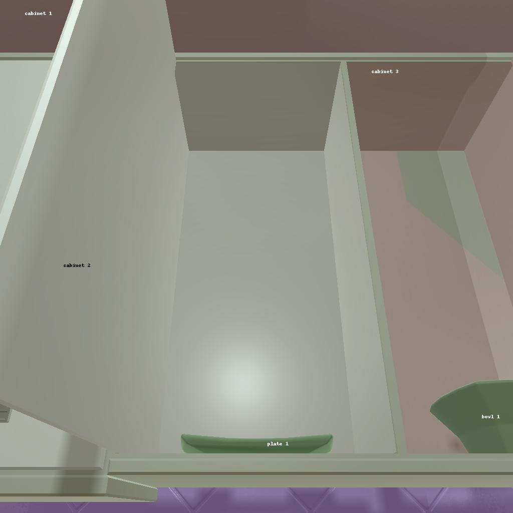

---------------------------------------------------------task: 21---------------------------------------------------------
--------------------------------------------------------------------------------------------------------------------------------------------------------------------
--------------------------------------------------------------------------------------------------------------------------------------------------------------------
Step:--------------------------------------------------------------------------16-------------------------------------------------------------------------------
----------------------------------------
VLM Prompt:
Image1:
Image2:
**Instruction**
1. Analyze the provided image to identify all visible household objects, focusing on those relevant to the task description "put a hot cup in countertop."
2. Use the analysis of the image and the task hint "The agent must find an object of the desired type, pick it up, go to a microwave, heat the object with the microwave, then find the correct location to place it, and put it down there. The agent does not need to use the microwave button or open the microwave to heat the object, and the agent just needs to do action that is "heat the object with the microwave"." to answer the question: what is the most reasonable action in the choices for the task description "put a hot cup in countertop"?
4. Decide and write the answer using the template: The answer is: (i): , where i is the real number. If there is no desired object in the image, search every place based on **Initial Observation** to find the object. And if no one is exactly correct, choose a similar answer.
**Initial Observation**
You are in the middle of a room. Looking quickly around you, you can see cabinet (1-6), microwave (1), countertop (1-2), coffeemachine (1), toaster (1), sink (1), sinkbasin (1), fridge (1)
**Answer Choices**
(1): go to cabinet 3
(2): go to microwave 1
(3): go to cabinet 5
(4): go to cabinet 6
(5): go to countertop 1
(6): go to coffeemachine 1
(7): go to toaster 1
(8): go to countertop 2
(9): go to sink 1
(10): go to sinkbasin 1
(11): go to fridge 1
(12): open cabinet 2
(13): close cabinet 2
(14): examine cabinet 2
**Answer**
Let's think step by step by following the instructions.
----------------------------------------
----------------------------------------
Original Response:
First, we need to find a cup, which is not visibly present in the provided images. Since the task requires a cup, we should search the cabinets as they are common places to store cups.
Next, we need to heat the cup, which implies we need to go to the microwave. However, since the task does not require us to interact with the microwave other than to heat the object, we can skip the actions related to using the microwave button or opening the microwave.
Finally, we need to put the hot cup on the countertop. This is the last step once we have a heated cup.
Based on the initial observation, we know there are cabinets 1 through 6. Since we cannot see inside cabinets 3, 5, and 6 from the images, those are the cabinets we should consider checking.
The most reasonable action from the choices provided would be to first go to a cabinet that we haven't seen inside yet to find a cup. Since cabinet 3 is the first unopened cabinet listed in the choices, the answer is:
(1): go to cabinet 3
----------------------------------------
----------------------------------------
>>> Refine Original VLM Response and Get Pure Action: No action
----------------------------------------
-----------------------------------------------------------------
Running time: 11.83017086982727 seconds
Total Money: 10.501240000000005
-----------------------------------------------------------------
-----------------------------------------------------------------
Text Observation:Nothing happens.
-----------------------------------------------------------------
UNSUCCEED